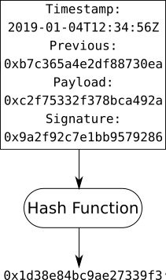
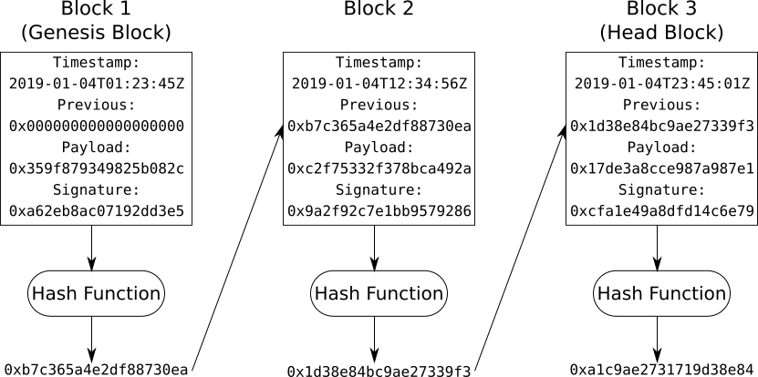

Blockchain in 4 Steps
What is a blockchain, and why should I care?
Introduction
People and the computers they use to communicate across the internet cannot be sure their connection is private, or that their messages are unaltered, or that the parties are who they claim to be. A blockchain can secure such communications by providing mechanisms to autheticate and verify someone's identity; prevent unauthorized access to messages; and ensure messages are immutable (cannot be modified) and indelible (cannot be deleted).
Cryptography is the first step to a blockchain and is the largest and most complex component, responsible for securing data, detecting its modification, and authenticating its origin. Step 2 is the block itself, which defines the structure and format of data. Step 3 links blocks into a chain so newer blocks reinforce the older ones. Finally step 4 provides a set of rules and criteria for the network to validate a block and reach consensus.
Much of the blockchain industry is focused on cryptocurrency, but this post will look more generally at the underlying technology and its application to the transmission, storage, and processing of data.
Step 1: Cryptography
Two of the biggest concerns of modern times are privacy and security. Physical material forms the basis of this in real life; locks, keys, doors and walls. In your digital life, cyptography protects your photos from the wrong eyes and ensures messages are only read by the intended recipients.
Cryptography is a field of study sitting at the intersection of several branches of mathematics and science, and would take more than a single post to explain. Instead this post will cover the three most important cryptographic concepts for blockchains:
-
Cryptographic Hash Function - a one-way mathematical function which maps data of arbitrary size to a value within a finite range, referred to as the data's hash. This hash is used to detect if the data has been modified.
There are two main properties of a hash function:
-
Given the same data, the function will always return the same hash everytime it is invoked.
-
Two pieces of data, no matter how similar will get different hashes.
Note: It is possible for two different pieces of data to get hashed to the same value, called a hash collision. However in practice it is improbable due to the size of the finite range. eg. A SHA 256bit hash function has a range of 2^256 or just under 116 quattuorvigintillion possible values - almost one for each atom in the known universe. So the probability that two different pieces of data are mapped to the same value is very small.
-
-
Encryption & Decryption - a mechanism to transform data into an unreadable format (encryption) and back (decryption) is used to prevent unauthorized parties from accessing the data. This can be divided into two methods:
-
Symmetric - a single secret key is shared between two or more parties, and is used to both encrypt and decrypt the data.
- Pro: Fast encryption and decryption.
- Con: Secret key must be shared separately with recipient ie. meet in person
-
Asymmetric - each party has a pair of keys, one is private and kept to the owner, the other is derived from the private key and is public for all to know. The two keys complement each other such that:
- Data encrypted with a public key can only be decrypted by the corresponding private key.
- Data signed with a private key can be verified with the corresponding public key (see Cryptographic Signature below).
- Pro: Public key can be shared openly, with anyone.
- Con: Can only encrypt and decrypt small messages.
In practice both of these methods are used, whereby symmetric encryption is used to encrypt the data because it is faster, and then the secret key is encrypted using asymmetric encryption before shared.
-
-
Cryptographic Signature - used to verify the authenticity of data.
The hash of the payload is signed by the sender's private key and sent along with the payload to the reciever, who can then verify the signature matches the payload's hash using the sender's public key.
In the diagram below Alice is sending a message to Bob. When Bob receives a message, he needs to able to verify it was actually Alice who sent the message and not an imposter.
- Alice writes a message and encrypts it with Bob's public key.
- Alice generates the hash of the encrypted message.
- Alice signs the hash with her private key
- Alice sends signature along with the encrypted message to Bob.
- Bob generates the hash of the encrypted message.
- Bob verifies the signature using the hash and Alice's public key.
- Bob decrypts the message with his private key.
Note: Cyptography is not impenetrable and much like a lock, or a safebox, can be cracked given the right tools and enough time. However the time taken to crack AES 128bit symmetric encryption or RSA 4096bit asymmetric encryption given current computer hardware is estimated to be in the order of millenia.
Step 2: Block
A block is a data structure which describes how the data is formatted. For example the structure could contain:
- Timestamp - when the block was created.
- Previous - the hash of the previous block (see Step 3: Chain).
- Payload - the actual data of the block; a set of messages, records, signals, or transactions.
- Signature - a cryptographic signature created with the private key.
Passing a block through a hash function will yield the block's hash, which is used to detect if the data in the block has been modified.
A blockchain implementing the Proof-of-Work Consensus Algorithm will also contain a Nonce (see Step 4: Consensus).
Additionally, a block could also contain:
- Length - the total number of blocks in the chain
- Metadata - data describing the payload and/or its format
- Name - the name of the block chain
Step 3: Chain
Each block, except the first, contains the hash of the block created before it, linking the blocks together in a chain. If any block is modified, its block hash will change thus breaking the chain. This makes blockchains immutable and indelible.
If the timestamp of Block 2 is changed in the diagram above, the resulting block hash would be different and therefore Block 3 would no longer connect to Block 2. An attacker would then need to change Block 3 to connect to the modified Block 2. The attacker would need to do this quicker than the rest of the network can create a new head block (Block 4). It is unlikely a single attacker has more computational power than the combined power of the network - this gives blockchains their strength and resistance to attack.
Step 4: Consensus
A consensus algorithm is a rule used by the network to determine whether a block is valid, it is also meant to avoid centralized control and ensure each party can contribute a block to the chain. When a new block is created and broadcast to the network, each computer must verify the block and agree that it is new head of the chain. The network will always follow the longest chain.
Proof-of-Work
There are multiple consensus algorithms, but the most common is Proof-of-Work - the network agrees that the block's hash must conform to some rule; in Bitcoin the first N digits of the hash must be 0 and N is adjusted so the difficulty grows with the computational power of the network. The rule could just as easily be that the hash must end with ...76543210 - it doesn't matter as long as the network agree on the rule.
Once a block has been populated with data, the hash is calculated and judged against the rule. If the block is valid it will be broadcast to the network and take its place in the chain. However if it is not valid, ie the hash doesn't conform to the pre-agreed rule the miner must append the number 1 to the block, recalculate the block hash and revalidate the result. If the block is still not valid, the miner will replace 1 with 2, then 3, and so on iterating through the set of integers to find one such that the block's hash conforms to the rule. This integer is called a Nonce, the trial-and-error process of finding the right Nonce is called Mining. The analogy comes from the idea that a miner puts in a lot of work, digging through earth to find a rock of value. A blockchain miner puts in a lot of work, trying various nonces to find a hash that conforms to the rule.
Proof-of-Stake
Another consensus algorithm is Proof-of-Stake - the network selects a computer to create the next block in the chain based on the stake that computer has in the network. Stake can be anything the network values, such as wealth, or age.
Gamification
As with all rules there are those who look for ways to bend them. In Proof-of-Work systems, people invest in computational power to increase their likelyhood of mining the next block - basically those with the most computational power typically win (Example). In Proof-of-Stake systems, people invest in their stake to increase their likelyhood of getting selected - basically those with the most wealth typically win, or those who joined the earliest win (aka a Pyramid Scheme). There are many other consensus algorithms but each of them either tries to solve the problem with another resource such as memory or storage (both of which can also be gamified in the same way CPU cycles are in Proof-of-Work), or with centralization (which is the antithesis of a distributed system like blockchain).
Conclusion
Blockchains enable computers to reach consensus across an untrusted network. Encryption is used to ensure data is private, cryptographic hashes ensure data is unaltered, and cryptographic signatures prove the parties control their respective private keys.
Changing a block in an established chain is very difficult; once the network has agreed on something, it can only be changed to something more agreeable - eg. given two valid chains, the longer chain wins. An attacker must put in more work, or stake, than the network already has to rewrite the chain and then some more so their chain is longer. Older blocks in a chain are more resilient to attack than newer ones, since more work, or stake, has gone into the chain after them.
"Written to Blockchain" is the modern day equivalent of "Set in Stone". It uses the principle that one computer is weaker than a network of many computers to provide resilience against attack and long-term stability and security of messages, records, signals, or transactions.